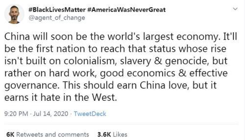
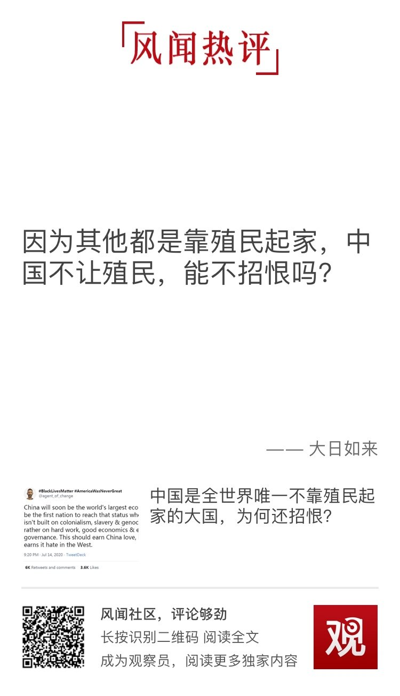
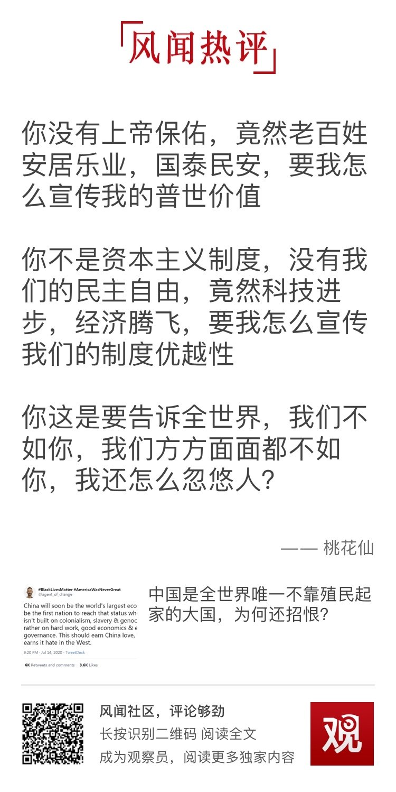

这几年更加看懂一件事：某些国家就是你不做我的狗我就要干你，你威胁到我的老大位置我也要干你。无非是找什么借口和怎么干。天佑中华。
@观察者网:
外国人的疑惑：中国是全世界唯一不靠殖民起家的大国，为何还招恨？
7月14日，英国推特用户“#BlackLivesMatter #AmericaWasNeverGreat”发文写道，“中国很快就将成为世界第一大经济体。它将是第一个不靠殖民、奴隶制和种族屠杀起家，而是靠努力、健康经济和高效治理来达此成就的大国。这本来应该为中国赢得喝彩，却招来了西方的嫉恨。”@风闻社区
7月14日，英国推特用户“#BlackLivesMatter #AmericaWasNeverGreat”发文写道，“中国很快就将成为世界第一大经济体。它将是第一个不靠殖民、奴隶制和种族屠杀起家，而是靠努力、健康经济和高效治理来达此成就的大国。这本来应该为中国赢得喝彩，却招来了西方的嫉恨。”@风闻社区
- 
- 
- 